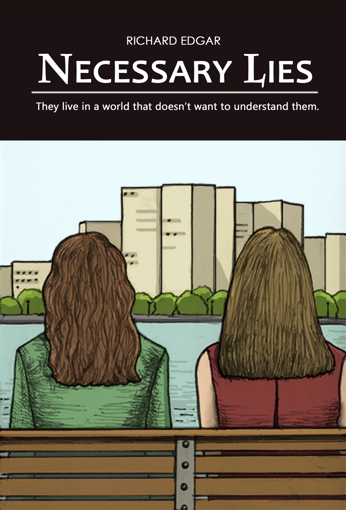
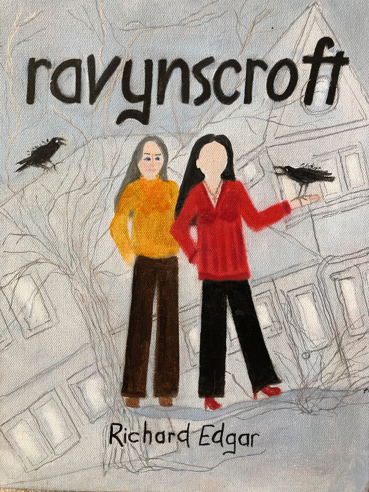

My first (published) novel, Necessary Lies, is available on Amazon. It's speculative fiction, character-driven with a little science fiction (in this case, biology). I got interested in the weird situation same-sex couples were in a few years ago, where they could be legally married in one state, but if they drove across the bridge to another, they were not related in any way.

The blurb:
Every family has secrets. Every family tells lies to protect their secrets. Bringing up ethical children with necessary lies is a problem.
They told Sarah she could never have children of her own. I told her I wanted to have her babies, and she found a way to make that happen.
They told Sarah she could never marry the love of her life. But then they legalized same-sex marriage across the river. So we got married, cherry blossoms and two kids in all the wedding pictures.
Growing up different is hard, I understand that. My Miranda is such a headstrong teenager.
We looked like a normal family, almost.
Except houses are expensive across the river where we're legal.
Except things haven't really changed that much since I was a kid, getting beat up because I was gay.
Except being not quite legal makes a difference at the hospital. With the school system. At the state university system.
Necessary lies almost worked, until they just didn't any more. Were we really all that different? And what do we do now, to pick up the pieces?
This book is a fantastic look at the complex issues involved in living a "non-traditional life" through the lens of a well-constructed story. The characters are believable, the writing is excellent, it's first and foremost a *good book* - and then, like hidden protein in a sweet dessert, there's the solid core of deeper meaning running throughout. Highly recommended. -- Matt Beland
There's a full review in the Toasted Cheese Literary Journal.
Ravynscroft is another novel set in the same world as Necessary Lies, and is due out Summer 2020.

Ravyn's wife moves out, leaving her alone with a large house, the empty shell, really, of a broken home, a broken heart just as large, a broken marriage, broken promises, broken community and friendships, broken dreams. She tells us the tale of her coming-again of age in her 40s, finding most of the pieces and building something new that sort of looks like a life, from the things she has: A big empty house, an empty heart, friends who need some of each, lots of grief, and memories of past lives she might almost wish hadn't ever happened. Who would she have been, if only?
This is a second novel in the series that began with Necessary Lies.
Richard Edgar is a retired scientist, living near Denver, writing speculative character-driven queer fiction, science fiction, and sometimes just fiction about queer scientists.